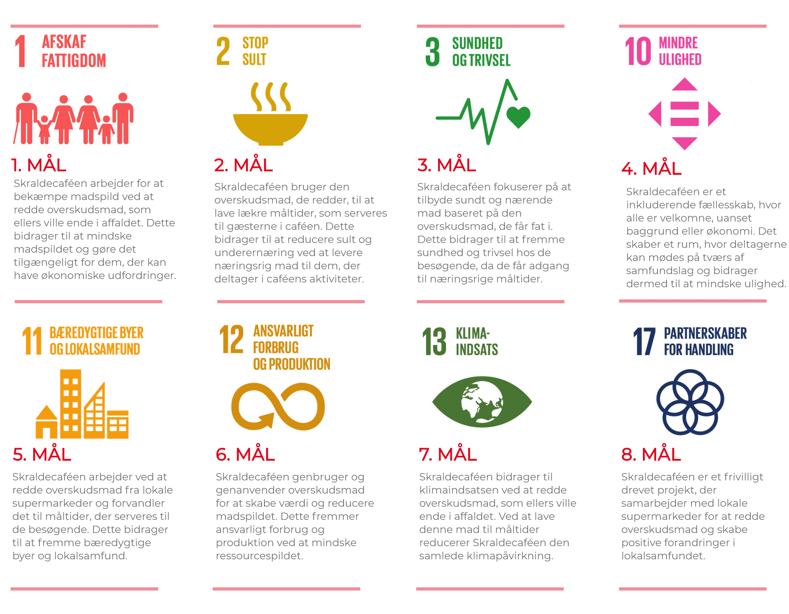

1
SKRALDECAFÉEN
ÅRHUS
Skraldecaféen er et frivilligt drevet projekt,
som brænder for at bekæmpe
madspild og skabe et stærkt fællesskab.
Frivillig hos Skraldecaféen

Skraldecaféen beskriver sig selv som et fællesskabsdrevet socialøkonomisk oplevelseskøkken, hvor borgere i Aarhus kan komme forbi og få et gratis måltid mad, og fylde en mælkekasse med overskudsvarer fra de butikker som caféen arbejder sammen med.
“
...det der er med Skraldecaféen, er at det fænger, så før man ved af det,
så er man her altså bare lige pludselig fem dage om ugen.
„
Skraldecaféen er med til at realisere målene
